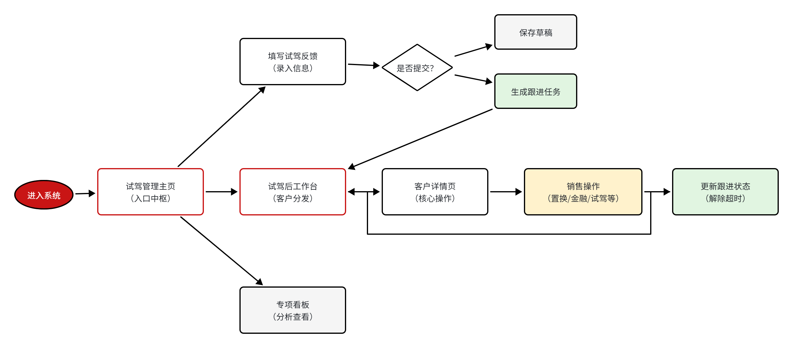
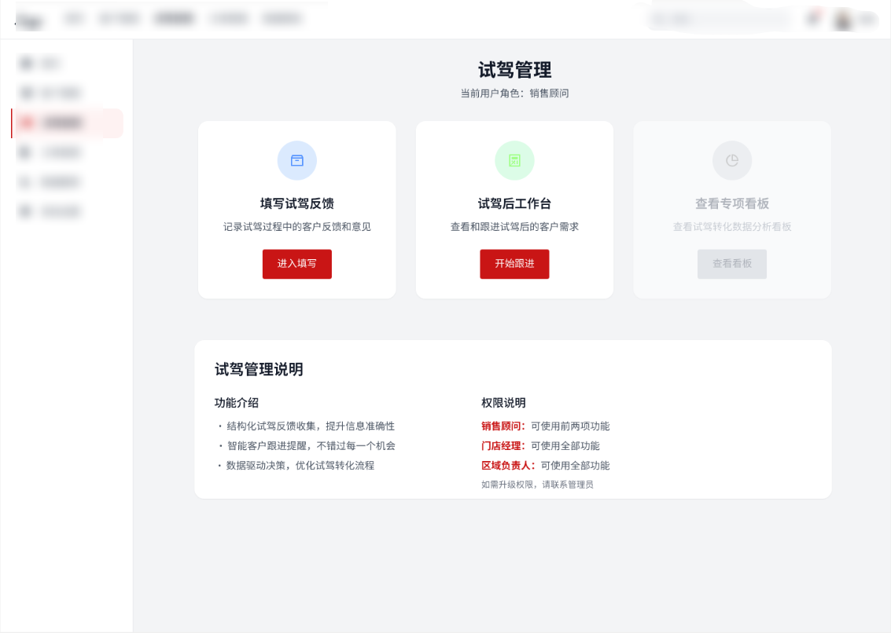
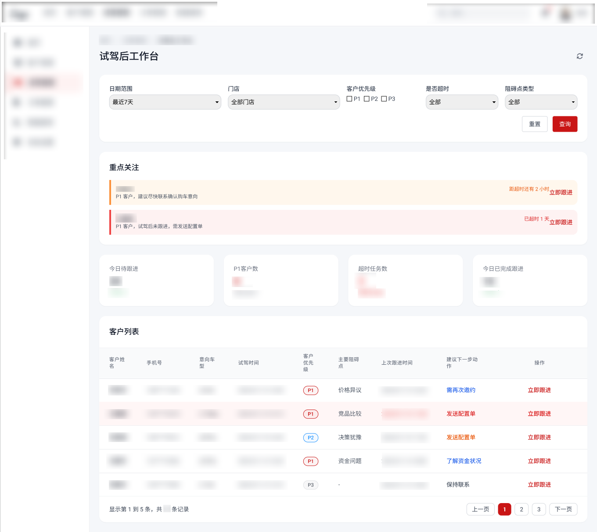
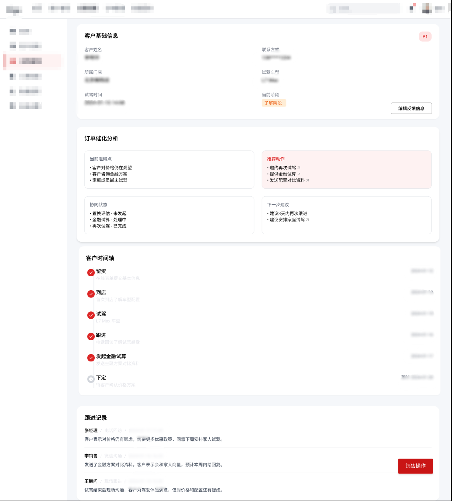
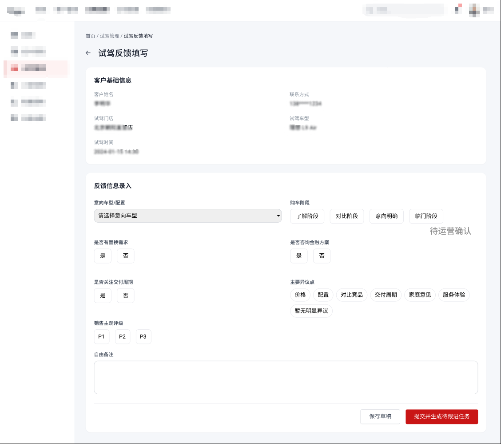
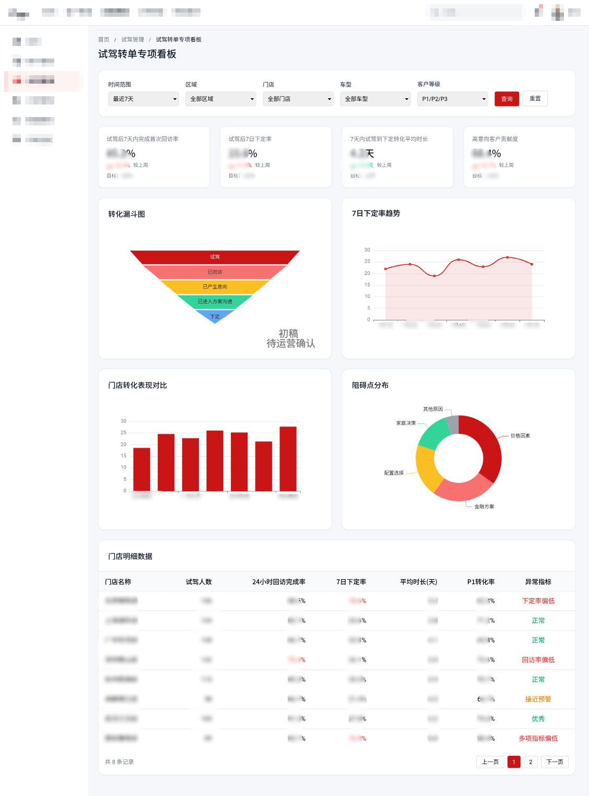

业务背景
理想汽车以直营销售模式为核心，销售 CRM 承接从线索分配、试驾预约、到店接待到成交推进的全过程，是门店一线运营的重要系统支撑。试驾作为客户由兴趣进入决策评估的关键节点，需要更精细的过程运营能力。
CASE STUDY · 03
聚焦直营销售“试驾后—下定前”高意向转化环节，围绕客户识别、销售跟进与结果分析完成 CRM 模块迭代，补齐试驾后链路的结构化支撑。
项目贡献 01
链路梳理
协助梳理试驾后转单链路，提炼高意向识别、销售跟进与阻碍承接问题。
项目贡献 02
方案设计
参与结构化反馈、客户分层、催化动作与专项看板等方案设计。
项目贡献 03
协同推进
协助需求评审、研发对齐、上线跟进与问题收集，推动方案闭环。
BACKGROUND
业务背景
理想汽车以直营销售模式为核心，销售 CRM 承接从线索分配、试驾预约、到店接待到成交推进的全过程，是门店一线运营的重要系统支撑。试驾作为客户由兴趣进入决策评估的关键节点，需要更精细的过程运营能力。
问题背景
原有试驾后流程中，反馈记录更依赖销售个人表达，字段不统一、信息难复用；高意向客户缺少清晰优先级支撑，管理侧也缺少围绕试驾后 7 天转化窗口的统一观察视角。
迭代目标
通过结构化反馈、客户分层、销售执行与专项看板设计，建立“反馈采集—销售执行—管理分析”的试驾后转化闭环，提升识别效率、跟进效率与管理可观测性。
KEY ISSUES
问题 1
高意向识别缺失
试驾反馈缺少结构化沉淀，客户意向判断更多依赖销售个人经验，难以稳定识别更值得优先跟进的对象。
问题 2
销售跟进无优先级
试驾后客户容易与普通待办混排，高价值客户缺少前置排序和临期提醒，跟进节奏不够清晰。
问题 3
反馈信息不结构化
意向车型、购买阶段、异议点与主观评级等信息缺少统一录入口径，后续难以支撑客户分层与策略制定。
问题 4
转化复盘不闭环
管理层能看到试驾量和订单量，但缺少围绕试驾后 7 天转化窗口的专项视角，难以快速定位问题来源。
SOLUTION OVERVIEW
反馈采集层
统一记录客户意向阶段、试驾反馈、主要异议点与销售主观评级，为后续优先级计算提供标准化输入。
销售执行层
围绕 P1-P3 客户分层、临期任务提醒与建议动作组织销售工作台，降低销售跟进中的判断成本。
催化承接层
将置换、金融、配置、交付周期等高频阻碍点带入客户详情与销售操作，推动问题从识别走向承接。
经营分析层
通过试驾转单专项看板统一观察试驾后 7 天内的回访、下定、转化漏斗与阻碍点分布，补齐管理视角。
KEY PAGES
流程总览
围绕“反馈录入—销售跟进—动作承接—结果分析”形成闭环设计。以下页面依次对应入口管理、销售执行、客户判断、结构化补录与专项分析。
业务流程图

试驾管理页面截图

作为试驾转单模块的统一入口，连接试驾反馈录入、试驾后工作台与专项看板三类核心能力，帮助不同角色快速进入对应工作链路。
围绕重点客户、临期待跟进任务与客户列表组织销售执行页面，帮助销售优先处理更值得跟进的客户，并快速进入后续跟进动作。
试驾后工作台页面截图

客户详情页面截图

整合客户基础信息、订单催化分析、客户时间轴与跟进记录，帮助销售在同一页面内判断客户当前阻碍与下一步推进方向。
作为试驾后的结构化数据录入口，统一记录客户意向、购买阶段、异议点与主观评级，为后续客户分层、待跟进任务生成与专项分析提供输入。
试驾反馈结构化填写页面截图

面向门店经理与区域负责人，从试驾后转单过程出发，通过核心指标、漏斗、趋势与阻碍点分布快速定位转化问题，形成管理分析视角。
试驾转单专项看板页面截图

在这个项目中，我以产品实习生身份参与了试驾后转单链路的需求梳理与方案设计，重点参与结构化反馈设计、P1-P3 客户分层机制设计、录入字段与分级跟进规则优化，并参与专项数据看板整理，以及需求调研、方案评审、开发测试与上线复盘的全流程协同。
这次项目让我更明确地意识到，成熟企业的 CRM 版本迭代重点并不在于新增更多页面，而在于围绕关键经营问题，把输入、规则、动作与数据真正串成闭环。对 B 端产品而言，结构化输入、清晰分层与可复盘的数据视角，往往比单点功能堆叠更能直接影响业务执行质量。
作品集展示图片均已脱敏，企业内部敏感信息已做打码处理。